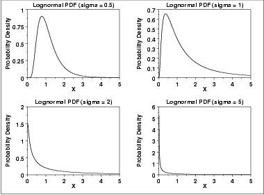
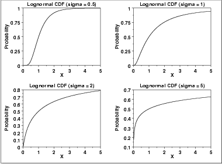
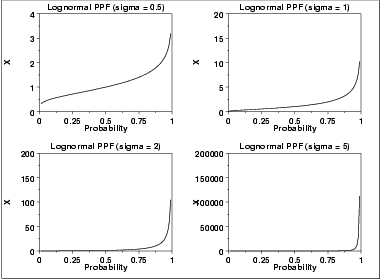
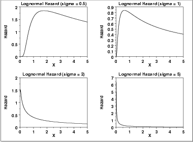
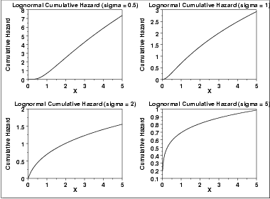
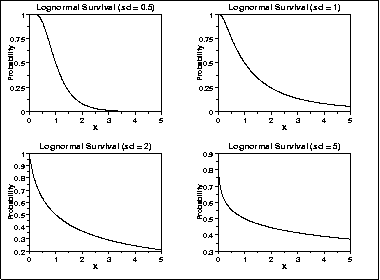

1.3. EDA Techniques
1.3.6. Probability Distributions
1.3.6.6. Gallery of Distributions
1.3.6.6.9. Lognormal Distribution
\( f(x) = \frac{e^{-((\ln((x-\theta)/m))^{2}/(2\sigma^{2}))}} {(x-\theta)\sigma\sqrt{2\pi}} \hspace{.2in} x > \theta; m, \sigma > 0 \)
where σ is the shape parameter (and is the standard deviation of the log of the distribution), θ is the location parameter and m is the scale parameter (and is also the median of the distribution). If x = θ, then f(x) = 0. The case where θ = 0 and m = 1 is called the standard lognormal distribution. The case where θ equals zero is called the 2-parameter lognormal distribution.
The equation for the standard lognormal distribution is
\( f(x) = \frac{e^{-((\ln x)^{2}/2\sigma^{2})}} {x\sigma\sqrt{2\pi}} \hspace{.2in} x > 0; \sigma > 0 \)
Since the general form of probability functions can be expressed in terms of the standard distribution, all subsequent formulas in this section are given for the standard form of the function.
Note that the lognormal distribution is commonly parameterized with
\( \mu = \log(m) \)
The μ parameter is the mean of the log of the distribution. If the μ parameterization is used, the lognormal pdf is
\( f(x) = \frac{e^{-(\ln(x - \theta) - \mu)^2/(2\sigma^2)}} {(x - \theta)\sigma\sqrt{2\pi}} \hspace{.2in} x > 0; \sigma > 0 \)
We prefer to use the m parameterization since m is an explicit scale parameter.
The following is the plot of the lognormal probability density function for four values of σ.

There are several common parameterizations of the lognormal distribution. The form given here is from Evans, Hastings, and Peacock.
\( F(x) = \Phi(\frac{\ln(x)} {\sigma}) \hspace{.2in} x \ge 0; \sigma > 0 \)
where \(\Phi\) is the cumulative distribution function of the normal distribution.
The following is the plot of the lognormal cumulative distribution function with the same values of σ as the pdf plots above.

\( G(p) = \exp(\sigma\Phi^{-1}(p)) \hspace{.2in} 0 \le p < 1; \sigma > 0 \)
where \(\Phi^{-1}\) is the percent point function of the normal distribution.
The following is the plot of the lognormal percent point function with the same values of σ as the pdf plots above.

\( h(x,\sigma) = \frac{(\frac{1} {x\sigma})\phi(\frac{\ln x} {\sigma})} {\Phi(\frac{-\ln x} {\sigma})} \hspace{.2in} x > 0; \sigma > 0 \)
where \(\phi\) is the probability density function of the normal distribution and \(\Phi\) is the cumulative distribution function of the normal distribution.
The following is the plot of the lognormal hazard function with the same values of σ as the pdf plots above.

\( H(x) = -\ln(1 - \Phi(\frac{\ln(x)} {\sigma})) \hspace{.2in} x \ge 0; \sigma > 0 \)
where \(\Phi\) is the cumulative distribution function of the normal distribution.
The following is the plot of the lognormal cumulative hazard function with the same values of σ as the pdf plots above.

\( S(x) = 1 - \Phi(\frac{\ln(x)} {\sigma}) \hspace{.2in} x \ge 0; \sigma > 0 \)
where \(\Phi\) is the cumulative distribution function of the normal distribution.
The following is the plot of the lognormal survival function with the same values of σ as the pdf plots above.

\( Z(p) = \exp(\sigma\Phi^{-1}(1-p)) \hspace{.2in} 0 \le p < 1; \sigma > 0 \)
where \(\Phi^{-1}\) is the percent point function of the normal distribution.
The following is the plot of the lognormal inverse survival function with the same values of σ as the pdf plots above.

| Mean | \( e^{0.5\sigma^{2}} \) |
| Median | Scale parameter m (= 1 if scale parameter not specified). |
| Mode | \( \frac{1} {e^{\sigma^{2}}} \) |
| Range | 0 to \(\infty\) |
| Standard Deviation | \( \sqrt{e^{\sigma^{2}} (e^{\sigma^{2}} - 1)} \) |
| Skewness | \( (e^{\sigma^{2}}+2) \sqrt{e^{\sigma^{2}} - 1} \) |
| Kurtosis | \( (e^{\sigma^{2}})^{4} + 2(e^{\sigma^{2}})^{3} + 3(e^{\sigma^{2}})^{2} - 3 \) |
| Coefficient of Variation | \( \sqrt{e^{\sigma^{2}} - 1} \) |
-
\( \hat{m} = \exp{\hat{\mu}} \)
-
\( \hat{\sigma} = \sqrt{\frac{\sum_{i=1}^{N}{(\ln{(X_{i})} -
\hat{\mu})^{2}}} {N}} \)
-
\( \hat{\mu}= \frac{\sum_{i=1}^{N}{\ln{X_i}}} {N} \)